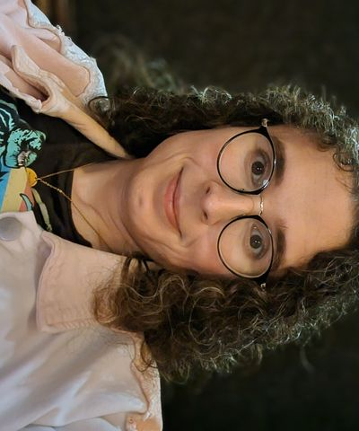
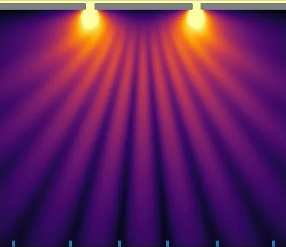
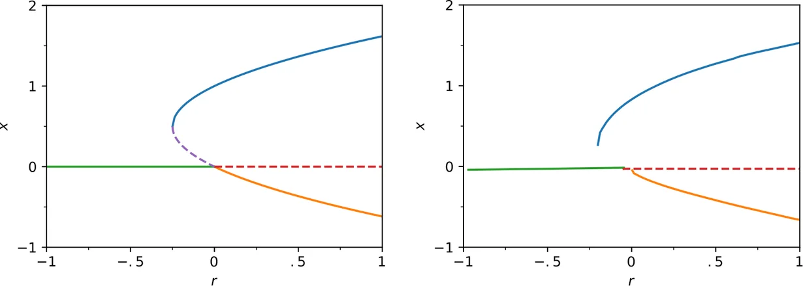
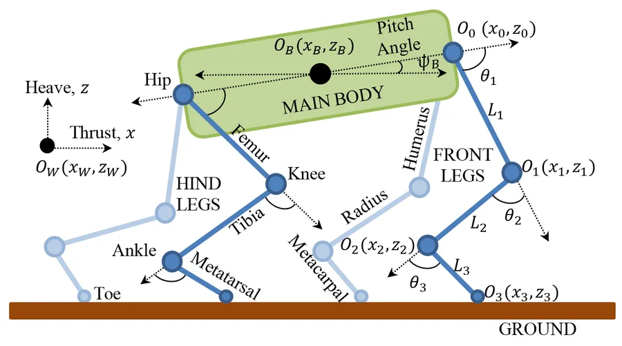

Lyra Zhornyak
PhD Candidate · Dynamical Systems, Robotics & Physics-Guided ML
University of Pennsylvania · Advised by M. Ani Hsieh
I build physics-guided machine learning models to derive structure-preserving neural integrators from variational principles, predict critical transitions in dynamical systems, and optimize robot locomotion.

Research

Learned Lagrangian models of PDEs
Structure-preserving neural integrators derived from variational principles.
NeurIPS 2026

Inferring bifurcation diagrams
A transformer that recovers bifurcation diagrams from as few as 30 noisy trajectories.
Chaos 2024

Gait optimization for quadruped rovers
Central pattern generators for minimum-torque gait transitions, matching feline gaits.
Robotica 2020
AlsoEvaluation and representation in computer vision: Beyond mAP (CVPR 2023) and HashEncoding (2022).
SkillsPython, PyTorch, JAX, C/C++, MATLAB, Java, Haskell, Git, Docker, Linux, Jupyter, LaTeX
Publications
Learned Lagrangian Models of PDEs via Euler–Lagrange Residual MinimizationSpotlight
Advances in Neural Information Processing Systems (NeurIPS), 2026, to appear
Inferring Bifurcation Diagrams with Transformers
Chaos: An Interdisciplinary Journal of Nonlinear Science, Vol. 34, No. 5, 051102
Beyond mAP: Towards Better Evaluation of Instance Segmentation
Proceedings of the IEEE/CVF Conference on Computer Vision and Pattern Recognition (CVPR), pp. 21975–21984
HashEncoding: Autoencoding with Multiscale Coordinate Hashing
arXiv preprint, arXiv:2211.15894
Education
Ph.D. in Computer and Information Science (expected Fall 2027)
GRASP Lab, University of Pennsylvania · Advised by M. Ani Hsieh
Dissertation in progress on physics-guided machine learning for dynamical systems.
B.A.Sc. in Engineering Science
University of Toronto, Engineering Science · Supervised by M. Reza Emami
Thesis: Minimum torque gait transitions in quadruped rovers using central pattern generators.
Experience
Research
Research Intern
University of Leeds · Supervised by Richard Romano · Leeds, UK
Developed a vision-based hand pose tracking system for a driver awareness study in a vehicle simulator.
Industry
Engineering Intern
Orbis Investment Management, Data Science Team · London, UK
Designed and built a computer vision pipeline for real-time brand logo detection in video streams to support investment research analysis.
Undergraduate Technical Intern
Intel, Programmable Solutions Group · San Jose, CA
Built a constraint verification system for PCIe module configuration on the Intel Agilex FPGA platform. Implemented message-signaled interrupt (MSI) support in Linux kernel drivers.
Teaching & Service
Peer Reviewer
NeurIPS; ICLR; CVPR; Chaos: An Interdisciplinary Journal of Nonlinear Science; IEEE Robotics and Automation Letters (RA-L); Chaos, Solitons & Fractals
Reviewing for machine learning and computer vision conferences and for journals in nonlinear dynamics and robotics.
Teaching Assistant
University of Pennsylvania · CIS 680: Advanced Topics in Machine Perception
Graduate-level course. Held office hours, graded assignments, and supported students across multiple semesters.
Control Team Lead
University of Toronto Humanoid RoboSoccer Team
Led the control subsystem for autonomous humanoid robots competing in international RoboCup events. Responsible for locomotion, balance, and behavior planning.
Awards
Mitacs Globalink Research Award
University of Leeds, UK
International research award that funded the 2019 research internship at Leeds on vision-based tracking of hands in vehicles.
NSERC Undergraduate Student Research Award
University of Toronto
National peer-reviewed research grant from Canada's federal science funding agency. Project: Mobility analysis and synthesis of quadruped robots.
Contact
I am open to research collaborations and industry or postdoctoral opportunities. Reach me at my university email.